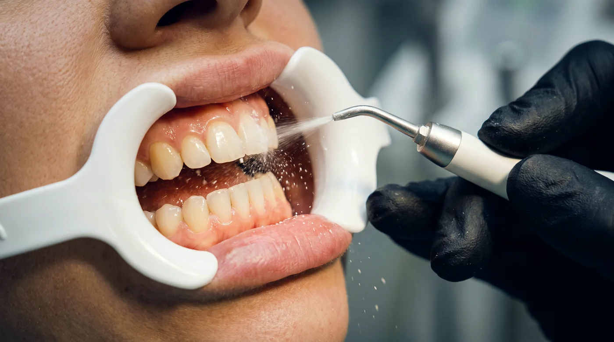

Сначала о названии
AIR-FLOW — это товарный знак швейцарской компании EMS. Так называются её аппараты для воздушно-абразивной обработки. Метод же существует независимо от бренда и корректно называется воздушно-абразивной обработкой или порошково-струйной полировкой.
Название прижилось так же, как «ксерокс» вместо копира. Пациент приходит и просит «сделать Air Flow», имея в виду процедуру в целом — и врач его прекрасно понимает.
Что это значит на практике
Метод доступен не только владельцам аппарата EMS. Пескоструйный наконечник, подключаемый к обычной стоматологической установке, делает ровно то же самое — вопрос только в порошке и настройках.
Как это работает
Через сопло наконечника под давлением подаётся смесь трёх компонентов:
- сжатый воздух — разгоняет частицы;
- вода — охлаждает поверхность, прибивает аэрозоль и смывает снятый налёт;
- порошок — собственно рабочее тело, которое механически удаляет отложения.
Частицы ударяются о поверхность зуба под углом и сбивают налёт, не врезаясь в эмаль. Ключевые переменные здесь — размер частицы, её форма и твёрдость материала. Округлая частица эритритола диаметром 14 мкм и угловатый кристалл соды 40 мкм ведут себя принципиально по-разному: первая скорее полирует, вторая скорее счищает.

| Параметр | Эритритол 14–30 мкм | Сода 40 мкм |
|---|---|---|
| Форма частицы | Округлая | Кристаллическая, угловатая |
| Ощущения пациента | Мягко | Ощутимо |
| Поддесневая обработка | Допустима | Не применяется |
| Плотный налёт курильщика | Дольше | Быстро |
| Вкус | Сладковатый, нейтральный | Солёный |
Как проходит визит
- Осмотр. Врач оценивает объём отложений и состояние дёсен, при необходимости окрашивает налёт индикатором.
- Защита. Губы обрабатывают защитным средством, надевают очки, при необходимости ставят слюноотсос и коффердам.
- Ультразвук. Если есть минерализованный камень — сначала снимают его.
- Воздушно-абразивная обработка. Сама «пескоструйка»: 10–25 минут в зависимости от объёма работы.
- Полировка и фторирование. Финальные этапы, снижающие чувствительность и замедляющие повторное образование налёта.
Полный разбор всех этапов — в статье о профессиональной гигиене полости рта.
Что чувствует пациент
Ощущения складываются из трёх вещей: температуры воды, давления струи и абразивности порошка. Первые две настраивает врач, третью определяет выбранный расходник.
- Прохлада и лёгкое покалывание — норма.
- Солёный привкус — признак того, что работают содовым порошком.
- Резкая болезненность — повод сказать врачу: обычно решается сменой фракции или настроек аппарата.
При оголённых шейках зубов и клиновидных дефектах переход на мелкую фракцию эритритола меняет ощущения ощутимо — многие пациенты, считавшие процедуру неприятной, после смены порошка меняют мнение.
Показания
- Пигментированный налёт от кофе, чая, вина, табака.
- Биоплёнка в труднодоступных зонах: фиссуры, межзубные промежутки, пришеечная область.
- Гигиена вокруг брекетов, элайнеров, ретейнеров.
- Уход за имплантами и ортопедическими конструкциями.
- Подготовка поверхности перед фиксацией брекетов, герметизацией фиссур, отбеливанием.
- Поддерживающая терапия при заболеваниях пародонта.
Ограничения
Метод ограничен при тяжёлых нарушениях дыхания и хронических заболеваниях лёгких, при бессолевой диете (для порошков на основе бикарбоната натрия), острых воспалительных процессах в полости рта и в ряде других случаев. Решение принимает врач после осмотра.
Аппарат или наконечник
Существует два способа реализовать метод в кабинете:
- Отдельный аппарат — самостоятельное устройство с собственным управлением подачей воды, воздуха и порошка. Больше настроек, выше цена.
- Пескоструйный наконечник — подключается к штатному разъёму установки. NSK Prophy-Mate Neo, KaVo PROPHYflex, Woodpecker и другие. Порог входа кратно ниже.
Порошок в обоих случаях выполняет одну и ту же работу. Важно только, чтобы фракция подходила конкретной системе — таблица совместимости есть на отдельной странице.
Коротко
- Air Flow — бренд, метод называется воздушно-абразивной обработкой.
- Работает связка «воздух + вода + порошок»; результат определяет порошок.
- Ультразвук и воздушно-абразивную обработку не противопоставляют — их сочетают.
- Отдельный аппарат не обязателен: наконечник к установке решает ту же задачу.
Материал носит информационный характер и не заменяет консультацию специалиста. Имеются противопоказания, необходима консультация врача.